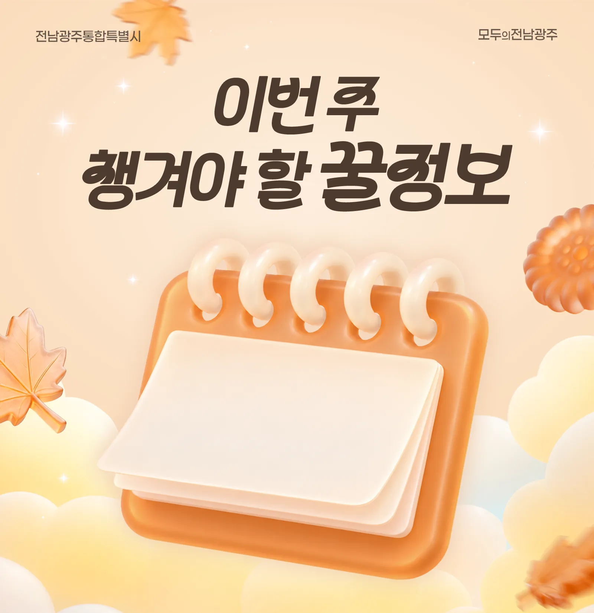
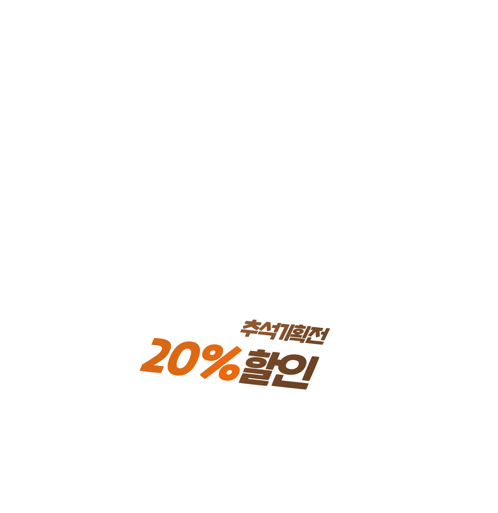
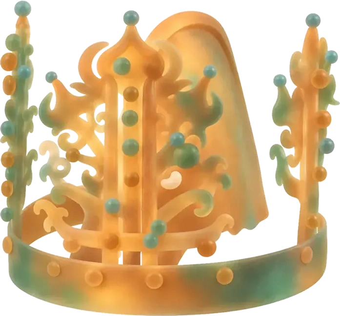

풍성한 추석 연휴를 위한
이번 주 꿀정보
추석 물가 잡을 행사부터
가을 축제까지 대공개!
추석 장바구니 물가
꽉 잡아요!
전남광주 수산물 기획전
추석을 맞아 수협중앙회 온라인 쇼핑몰 ‘수협쇼핑’에서 지역 수산물 행사를 진행합니다. 지역의 우수한 수산물을 부담 없이 구매해 보세요.
- 할인품목
- 전복, 민물장어, 조피볼락(우럭)
- 혜택
- 수협쇼핑에서 행사 상품을 구매하면
최종 결제금액의 20%를 상품당 1만원까지 할인
전통시장에서
장보세요?
최대 4만원 돌려드릴게요
올 추석 전통시장에서 장볼 계획이세요? 국산 농·축·수산물을 구매하면 온누리상품권을 환급해 드립니다. 전통시장에서 알뜰하게 장보고 환급 혜택까지 받아 가세요.
- 기간
- ~ 9시~17시
- 참여 전통시장
- 전통시장 총 60곳
(광주 24곳, 전남 36곳) - 분야
- 농축산물/수산물 2가지 (각각 최대 2만원 환급)
- 환급내용
- 행사 기간 내 분야별 1인 2만원 한도 환급
- 3만 4천원 이상 구매: 온누리상품권 1만원
- 6만 7천원 이상 구매: 온누리상품권 2만원

철기시대 마한은 어땠을까?
광주역사민속박물관에서
체험해요
우리 지역의 철기시대 국가인 마한과 마한 사람들의 문화와 생활을 체험하는 다양한 교육 프로그램을 연중 운영합니다. 초기 철기시대의 신창동 유적과 마한 사람들의 문화를 직접 체험해 보세요!
- 프로그램
-
- 유아: 시간을 담은 바람-신이·창이·동이와 함께 떠나는 시간여행, 강에서 시작된 마한 이야기
- 초등학생: 마한 탐험대(9월 19일, 10월 31일, 11월 21일, 12월 5일), 조물조물 쌀쿠키 만들기(10월 10일), 마한의 꼬마 악사(11월 28일)
- 참가신청
- 전남광주통합특별시 누리집 > 바로예약
서남권의 미래에
여러분의
아이디어를 더해 주세요
회원가입 없이 최소한의 개인정보만 입력하면 간편하게 참여가 가능해요. 우수 제안에는 최대 200만원의 부상금까지 지급! 많은 참여 바랍니다.
- 제안기간
- ~
- 제안분야
- 의료 인프라, 대학 경쟁력, 산업·관광·SOC 등 지역 발전 전략
- 참여방법
- 전남광주통합특별시 누리집 > 소통참여
첫 통합 개최합니다
‘일상 속 인권 작품 공모전’
전남광주통합특별시가 인권의 가치를 널리 알리고 인권 존중 문화를 확산하기 위해 2026 전남광주통합특별시 인권작품 공모전을 개최해요.
올해 주제는 ‘일상 속 인권’으로 분야는 포스터, 사진, 숏폼이에요. 인권에 관심 있는 사람이라면 지역과 국적에 관계없이 누구나 참여 가능하니 많은 관심과 참여 기다릴게요.
- 공모기간
- ~
- 공모주제
- 일상 속 인권침해 및 인권 존중 문화 확산에 관한 자유 주제※ 분야: 포스터, 사진, 숏폼
- 시상내역
- 전남광주통합특별시장 상장 및 시상금 수여
총 16점, 750만원 규모 - 접수방법
- 이메일 verwaltung@korea.kr
빛과 정원으로 물들다
남도 K-가든 페스티벌 개막
여수 원도심을 빛과 정원이 어우러진 낭만적 가을밤 명소로 꾸몄어요. 2026년 남도 K-가든 페스티벌이 여서 미관광장에서 개막했습니다.
영국 첼시 플라워쇼 금메달 수상자인 황지해 작가의 ‘가시나무 몽상’ 등 전국 공모를 통해 선정된 작가 10명이 선보이는 ‘작가의 정원’도 놓칠 수 없는 볼거리예요. 주말과 공휴일에는 버스킹, 정원 체험, 플리마켓이 열리고, 여수세계섬박람회를 오가는 무료 셔틀버스도 매일 14회 운영하니 색다른 즐거움을 놓치지 마세요.
- 기간
- ~
- 장소
- 여문 문화의 거리부터 여서 미관광장까지
약 1만 5천㎡ - 볼거리
- 전국 공모를 통해 선정된 작가 10명의 ‘작가의 정원’,
영국 첼시 플라워쇼 금메달 수상자 황지해 작가의 ‘가시나무 몽상’ 등 - 주말·공휴일
-
- 버스킹, 정원 체험, 플리마켓 운영
- 여수세계섬박람회 연계 무료 셔틀버스 매일 14회